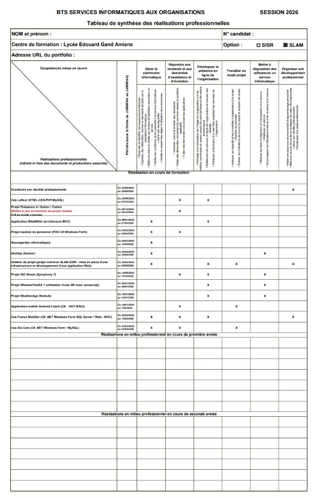

Option SISR
Solutions d'Infrastructure, Systèmes et Réseaux : administration serveurs, réseaux, sécurité et support.
Débouchés : technicien systèmes/réseaux, support, administrateur junior.
Bienvenue sur mon portfolio
Je suis étudiant en BTS SIO - Option SLAM
Étudiant en BTS SIO SLAM à Amiens, avec un Bac Pro RISC. Je me forme au développement d'applications web et métier.

Je suis Lilyan Icord, 20 ans, en 2e année de BTS SIO SLAM au Lycée Édouard Gand à Amiens.
Objectif à court terme : valider mon BTS SIO SLAM.
Objectif à long terme : poursuivre mes études et lancer une activité dans l'informatique.
Réseaux Informatiques et Systèmes Communicants – Mention Bien
Bac Pro RISC obtenu avec de bonnes bases en réseaux, systèmes et infrastructure.
Services Informatiques aux Organisations – Solutions Logicielles et Applications Métier
Formation orientée développement d'applications, programmation, BDD et gestion de projet.
Le BTS SIO est une formation de 2 ans aux métiers de l'informatique : analyser, concevoir, développer et maintenir.
En SLAM, je travaille la programmation, les bases de données, la gestion de projet et la documentation technique.
Après le BTS : insertion professionnelle (développeur, support, intégrateur) ou poursuite d'études (licence, bachelor, école).
Veille sur la cybersécurité militaire : menaces, défense et enjeux stratégiques pour les États.
Question de veille : Pourquoi la cybersécurité est‑elle devenue un enjeu stratégique majeur pour les forces armées ?
Définition et types d’attaques
Opérations offensives et défensives dans le cyberespace entre États.
.0 Infiltration de réseaux pour voler des informations sensibles.
Attaques visant à perturber ou détruire des systèmes critiques.
Diffusion de fausses informations pour déstabiliser un pays.
Cibles et impacts possibles
Tentatives de neutralisation de systèmes militaires (drones, satellites, défense aérienne).
Piratage de bases de données militaires sensibles.
Attaques sur infrastructures clés pouvant bloquer la défense d'un pays.
Protection, alliances et perspectives
Renforcement des réseaux et SOC pour détecter/répondre rapidement.
Partage d'informations entre alliés (OTAN, UE) et cyberdéfense commune.
IA pour détecter les attaques et automatiser la réponse.
Attribution difficile : attaques anonymes, réponse politique plus complexe.
Cette veille montre comment les objets connectés aident les sportifs à mieux s'entraîner et éviter les blessures.
Question de veille : Comment les objets connectés (montres GPS, capteurs cardiaques, textiles intelligents) améliorent‑ils la performance et la prévention des blessures dans le sport ?
Montres GPS, capteurs cardiaques, textiles intelligents
Donnent la distance, l'allure et l'intensité pour ajuster l'entraînement.
Suivent la fréquence cardiaque en direct pour mieux gérer l'effort.
Analysent la posture et les mouvements pour améliorer la technique.
Préparation, séance, récupération
Ajustement de la charge selon fatigue et objectifs.
Suivi en direct des indicateurs pour contrôler l'intensité.
Suivi sommeil/fatigue pour adapter repos et reprise.
Bénéfices mesurables et limites opérationnelles
Entraînement plus objectif et progression mieux mesurée.
Limites : coût, fiabilité variable, interprétation parfois difficile.
Enjeux éthiques : données de santé, consentement, usage responsable.
 Certification PIX – Cliquer pour ouvrir le PDF
Certification PIX – Cliquer pour ouvrir le PDF

Tableau de synthèse BTS SIO – Cliquer pour ouvrir le PDFUne sélection de réalisations scolaires et personnelles, avec des projets web et des documents techniques.
Projet en contexte professionnel avec structure multi-sections.
HTML • CSS • Intégration
Voir le projetFiche projet : objectifs, conception, fonctionnalités.
Documentation PDF
Ouvrir la ficheApplication météo avec API et interface utilisateur.
JavaScript • API • UI
Ouvrir la ficheProjet structuré en MVC avec séparation des responsabilités.
PHP • MVC • SQL
Ouvrir la ficheApplication web de gestion/consultation de produits en PHP.
PHP • MVC • SQL • CSS
Ouvrir la ficheUn nouveau projet sera ajouté prochainement dans cette section.
En préparation
Bientôt disponiblePour me contacter : lilyan.icord@yahoo.com